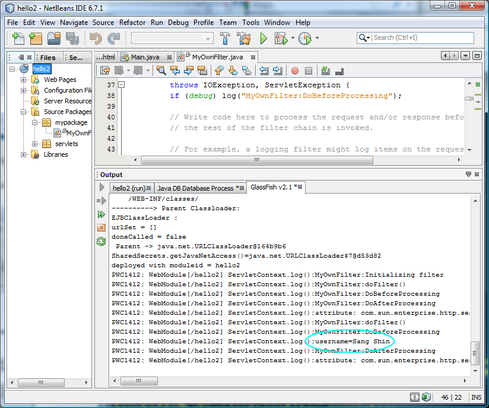

Servlet Advanced (Filtering, Life-cycle
Event Handling, etc.)
The goal of this lab is to exercise advanced features of Servlet,
especially filtering and life-cycle event handling.
In the first exercise, you are going to add a filter or two to a Web
application and observe how the doFilter() methods of the filters are
being invoked. In the second exercise, you are going to add
life-cycle event handlers to the same application and observe how those
event handlers are being invoked.
Expected duration: 60 minutes
Software Needed
Before you begin, you need to install JDK and NetBeans
as
described here. You also need to download and unzip the
hands-on lab zip file below.
- 4005_servletadv.zip (download)
- The zip file contains this document and the lab contents
- Download it and unzip in a directory of your choice
OS platforms you can use
- Windows
- Solaris x86, Solaris Sparc
- Linux
- Mac OS X
Change Log
- Nov. 13th, 2006: Created
- June 18th, 2008: Created with NetBeans 6.1
- Aug. 5th, 2009: Tested with NetBeans 6.7.1
Lab Exercises
Exercise 1: Build and configure servlet
filters
In this exercise, you are going to open
"hello2" NetBeans project first and then add a filter to it.
(1.1)
Open, build, and run "hello2" sample Servlet application
0. Start NetBeans IDE.
1. Open hello2
NetBeans project.
- Select File->Open Project (Ctrl+Shift+O). The Open Project dialog box appears.
- Browse down to <LAB_UNZIPPED_DIRECTORY>/servletadv/samples
directory.
- Windows: If you unzipped the 4005_servletadv.zip
file under
C:\
directory, the directory to which you want
to browse down should be C:\servletadv\samples.
- Solaris/Linux: If you unzipped the 4005_servletadv.zip
file under $HOME
directory, the directory to which you want
to browse down should be $HOME/servletadv/samples.
- Select hello2.
- Click Open Project.
The hello2
project node appears under Projects tab
window.
2 Build and run hello2 project.
- Right-click hello2
project and select Run.
- Browser gets displayed.
- Type your name in the input form
field and click Submit button.
Figure-1.12: Running hello2 project
return to top of the exercise
(1.2)
Add a Servlet filter to the hello2 application
In this step, you are going to add a
filter to the hello2 application using NetBeans.
1. Right-click
hello2 project node and select
New->Other.
2. Choose
Web under
Categories and select
Filter
under
File Types.
3. Click
Next.
(Figure-1.20 below)
Figure-1.20: Add a Filter to the Web application
4. Under
Name and Location
pane, for the
Class Name
field, type in
MyOwnFilter
and for the Package field, type in
mypackage.
(Figure-1.21 below)
Figure-1.21: Assign a Class Name and Package to the newly created Filter
5. Click
Finish to accept the
default
Filter Name and
Filter Mappings of the
Configure Filter Deployment
pane. This will modify
web.xml
file. (Figure-1.22 below)
Figure-1.22: Configure Filter Deployment
7. Right click on the gray-bar on the left side of the editor window
and select
Show Line Numbers
if it has not been configured yet
(Figure-1.24 below)

Figure-1.24: Show Line Numbers
8. From line number 87 to 125, please find
doFilter() method as shown in
Code-1.25
below.
/**
*
* @param request The servlet request we are
processing
* @param result The servlet response we are
creating
* @param chain The filter chain we are
processing
*
* @exception IOException if an input/output
error occurs
* @exception ServletException if a servlet
error occurs
*/
public void doFilter(ServletRequest request,
ServletResponse response,
FilterChain chain)
throws IOException, ServletException {
if (debug)
log("MyOwnFilter:doFilter()");
doBeforeProcessing(request,
response);
Throwable problem = null;
try {
chain.doFilter(request, response);
} catch(Throwable t) {
//
//
If an exception is thrown somewhere down the filter chain,
//
we still want to execute our after processing, and then
//
rethrow the problem after that.
//
problem = t;
t.printStackTrace();
}
doAfterProcessing(request,
response);
//
// If there was a problem,
we want to rethrow it if it is
// a known type, otherwise
log it.
//
if (problem != null) {
if
(problem instanceof ServletException) throw (ServletException)problem;
if
(problem instanceof IOException) throw (IOException)problem;
sendProcessingError(problem, response);
}
}
|
Code-1.25: doFilter() method
9. Uncomment the code fragments that were in commented
state as shown in Code-1.26 below. They are highlighted in bold
font.
private void
doBeforeProcessing(ServletRequest request, ServletResponse response)
throws IOException, ServletException {
if (debug)
log("MyOwnFilter:DoBeforeProcessing");
//
// Write code here to
process the request and/or response before
// the rest of the filter
chain is invoked.
//
//
// For example, a logging
filter might log items on the request object,
// such as the parameters.
//
// ------------- uncomment the
following code fragment -----------------
for (Enumeration en = request.getParameterNames();
en.hasMoreElements(); ) {
String name = (String)en.nextElement();
String values[] = request.getParameterValues(name);
int n = values.length;
StringBuffer buf = new StringBuffer();
buf.append(name);
buf.append("=");
for(int i=0; i < n; i++) {
buf.append(values[i]);
if (i < n-1)
buf.append(",");
}
log(buf.toString());
}
// -------------- end of the uncommented code fragment
------------------
}
private void doAfterProcessing(ServletRequest
request, ServletResponse response)
throws IOException, ServletException {
if (debug)
log("MyOwnFilter:DoAfterProcessing");
//
// Write code here to
process the request and/or response after
// the rest of the filter
chain is invoked.
//
//
// For example, a logging
filter might log the attributes on the
// request object after the
request has been processed.
//
//
------------- uncomment the following code fragment -----------------
for (Enumeration en = request.getAttributeNames();
en.hasMoreElements(); ) {
String name = (String)en.nextElement();
Object value = request.getAttribute(name);
log("attribute: " + name + "=" + value.toString());
}
// -------------- end of the
uncommented code fragment ------------------
//
//
// For example, a filter
might append something to the response.
//
/*
PrintWriter respOut = new
PrintWriter(response.getWriter());
respOut.println("<P><B>This has been appended by an
intrusive filter.</B>");
*/
}
|
Code-1.26: Uncomment the commented code fragments

10. Right-click
hello2
project and select
Run.
11. Browser gets displayed. Type your name in the input form
field and click
Submit button.
This will send a HTTP request to the application, which is then passed
through the filter.
12. Click
GlassFish Log
tab window and observe that
username=Sang
Shin
(or whatever your name you typed in) are displayed in the the log
file of the deployment platform, in this case, GlassFish v2.
(Figure-1.27 below)

Figure-1.27: Result of running the filter on the application
return to top of the exercise
(1.3)
Take a look at the web.xml file
1. Double-click
web.xml under
hello2->Configuration Files to
open it in the source editor.
2. Click
Filters tab and
observe the filter configurations. (Figure-1.28 below)
Figure-1.28: Filter configuration
3. Click
XML tab to see it as
a file.
4. Observe the filter configuration through
<filter> and
<filter-mapping> elements in
the
web.xml file.
(Figure-1.29 below)
Figure-1.29: web.xml file of the application
return to top of the exercise
(1.4)
Add another filter to the hello2 application
1. Add another filter to the hello2
application following the steps mentioned in the 1.2 above. Name
the filter as MyOwnFilter2.
2. Build and run the application and observe that logging messages are
displayed in the GlassFish's log file from both MyOwnFilter and MyOwnFilter2. (Figure-1.30
below)
Figure-1.30: Result of running the hello2 application with 2 filters
3. Remove the logging statements of the filters in the code so that you
don't see them in the next exercise.
return to top of the exercise
Summary
In this exercise, you have created
and added a new Servlet filter to the hello2 application, which
displays the input parameters
return to the top
Exercise 2: Add Life-cycle event handlers
to the hello2 application
In this exercise, you are going to add
various life-cycle event handlers to the hello2 application.
(2.1)
Add life-cycle event handlers to the hello2 application
1. Right-click hello2 project node and select New->File/Folder.
2. Choose Web under Categories and select Web
Application Listener
under File Types.
3. Click Next.
(Figure-2.10 below)
Figure-2.10: Add life-cycle events to the application
4. For the
Class Name field,
type in
MyOwnEventListener.
For the
Package field, type
in
mypackage.
5. Under Interface to implement section, select the following three
event types. (Figure-2.11 below)
- ContextListener
- HTTP Session Listener
- Request Listener (J2EE 1.4)

Figure-2.11: Choose life-cycle event types
5. Modify the
MyOwnEventListener.java
as shown in Code-2.12 below. The code fragments that need to be
added are highlighed in bold and blue-colored font. Basically you
are adding logging statements in each event handler.
/*
* MyOwnEventListener.java
*
* Created on November 13, 2006, 8:44 AM
*/
package mypackage;
import
javax.servlet.ServletContext;
import javax.servlet.ServletContextListener;
import javax.servlet.ServletContextEvent;
import javax.servlet.http.HttpSessionListener;
import javax.servlet.http.HttpSessionEvent;
import javax.servlet.ServletRequestListener;
import javax.servlet.ServletRequestEvent;
/**
*
* @author sang
* @version
*
* Web application lifecycle listener.
*/
public class MyOwnEventListener implements ServletContextListener,
HttpSessionListener, ServletRequestListener {
ServletContext
servletContext;
/**
* ### Method from ServletContextListener ###
*
* Called when a Web application is first ready
to process requests
* (i.e. on Web server startup and when a
context is added or reloaded).
*
* For example, here might be database
connections established
* and added to the servlet context attributes.
*/
public void contextInitialized(ServletContextEvent
evt) {
// TODO add your code here
e.g.:
/*
Connection con = // create connection
evt.getServletContext().setAttribute("con", con);
*/
servletContext = evt.getServletContext();
servletContext.log("contextInitialized() method is invoked");
}
/**
* ### Method from ServletContextListener ###
*
* Called when a Web application is about to be
shut down
* (i.e. on Web server shutdown or when a
context is removed or reloaded).
* Request handling will be stopped before this
method is called.
*
* For example, the database connections can be
closed here.
*/
public void contextDestroyed(ServletContextEvent
evt) {
// TODO add your code here
e.g.:
/*
Connection con = (Connection) e.getServletContext().getAttribute("con");
try { con.close(); } catch (SQLException ignored) { } // close
connection
*/
servletContext.log("contextDestroyed() method is invoked");
}
/**
* ### Method from HttpSessionListener ###
*
* Called when a session is created.
*/
public void sessionCreated(HttpSessionEvent evt) {
// TODO add your code here:
servletContext.log("sessionCreated() method is invoked");
}
/**
* ### Method from HttpSessionListener ###
*
* Called when a session is
destroyed(invalidated).
*/
public void sessionDestroyed(HttpSessionEvent evt) {
// TODO add your code here:
servletContext.log("sessionDestroyed() method is invoked");
}
/**
* ### Method from ServletRequestListener ###
*
* The request is about to come into scope of
the web application.
*/
public void requestInitialized(ServletRequestEvent
evt) {
// TODO add your code here:
servletContext.log("requestInitialized() method is invoked");
}
/**
* ### Method from ServletRequestListener ###
*
* The request is about to go out of scope of
the web application.
*/
public void requestDestroyed(ServletRequestEvent
evt) {
// TODO add your code here:
servletContext.log("requestDestroyed()
method is invoked");
}
}
|
Code-2.12: Add logging messages to the event handlers
6. Right-click
hello2
project and select
Run.
7. Click
GlassFish Log
tab window and observe that messages are displayed in the the log
file of the deployment platform, in this case, GlassFish.
(Figure-2.13 below) Notice that the
contextIntialized() event handler
gets invoked first since it is called once when the application is
deployed. Observe also that the
first HTTP request/response exchange between the browser and the
application occurred and the
requestInitialized()
and
requestDestroyed() event
handlers are invoked . (Figure-2.13 below)
Figure-2.13: Event handlers are called
8. In the browser, type your name in the input form
field and click
Submit button.
This will trigger, the 2nd HTTP request/response exchange between
the browser and the web application.
9. Click
GlassFish Log
tab window and observe that messages are displayed in the the log
file of the deployment platform, in this case, GlassFish.
(Figure-2.14 below)
Note: If you want to see the logging messages from scratch, right click
on the display area and select
Clear.
Figure-2.14: Event handlers are called
10. Modify the
GreetingServlet.java
under
hello2->Source
Package->servlets as shown in Code-2.15 below. The
code fragment that needs to be
added are highlighted in bold and blue-colored font. This will
trigger the creation of the
HttpSession
object if it has not been
created before, which in turn trigger the invocation of the
sessionCreated() event handler.
package servlets;
import java.io.*;
import java.util.*;
import java.sql.*;
import javax.servlet.*;
import javax.servlet.http.*;
/**
* This is a simple example of an HTTP Servlet. It responds
to the GET
* method of the HTTP protocol.
*/
public class GreetingServlet extends HttpServlet {
public void doGet(HttpServletRequest request,
HttpServletResponse response)
throws ServletException,
IOException {
response.setContentType("text/html");
response.setBufferSize(8192);
PrintWriter out =
response.getWriter();
// Get a session
HttpSession session = request.getSession();
// then write the data of
the response
out.println("<html>" +
"<head><title>Hello</title></head>");
// then write the data of
the response
out.println("<body
bgcolor=\"#ffffff\">" +
"<img src=\"duke.waving.gif\" alt=\"Duke waving\">" +
"<h2>Hello, my name is Duke. What's yours?</h2>" +
"<form method=\"get\">" +
"<input type=\"text\" name=\"username\" size=\"25\">" +
"<p></p>" +
"<input type=\"submit\" value=\"Submit\">" +
"<input type=\"reset\" value=\"Reset\">" + "</form>");
String username =
request.getParameter("username");
if ((username != null)
&& (username.length() > 0)) {
RequestDispatcher dispatcher =
getServletContext()
.getRequestDispatcher("/response");
if
(dispatcher != null) {
dispatcher.include(request, response);
}
}
out.println("</body></html>");
out.close();
}
public String getServletInfo() {
return "The Hello servlet
says hello.";
}
}
|
Code-2.15: Modified GreetingServlet.java
11. Modify the
ResponseServlet.java
under
hello2->Source
Package->mypackage as shown in Code-2.16 below. The
code fragment that needs to be
added are highlighted in bold and blue-colored font. This will
trigger the closing of the
HttpSession
object, which in turn trigger the invocation of the
sessionDestroyed() event handler.
package servlets;
import java.io.*;
import java.util.*;
import java.sql.*;
import javax.servlet.*;
import javax.servlet.http.*;
/**
* This is a simple example of an HTTP Servlet. It responds
to the GET
* method of the HTTP protocol.
*/
public class ResponseServlet extends HttpServlet {
public void doGet(HttpServletRequest request,
HttpServletResponse response)
throws ServletException,
IOException {
PrintWriter out =
response.getWriter();
// then write the data of
the response
String username =
request.getParameter("username");
if ((username != null)
&& (username.length() > 0)) {
out.println("<h2>Hello, " + username + "!</h2>");
}
// Close the
HttpSession
request.getSession().invalidate();
}
public String getServletInfo() {
return "The Response servlet
says hello.";
}
}
|
Code-2.16: Modified ResponseServlet.java
12. Right-click
hello2
project and select
Run.
13. Click
GlassFish Log
tab window and observe that messages are displayed in the the log
file of the deployment platform, in this case, GlassFish.
Notice that the
sessionCreated()
event handlers was invoked. (Figure-2.17 below)
Figure-2.17: sessionCreated() event handler is invoked
14. In the browser, type your name in the input form
field and click
Submit button.
This will trigger, the 2nd HTTP request/response exchange between
the browser and the web application.
15. Click
GlassFish
tab window and observe that messages are displayed in the the log
file of the deployment platform, in this case, GlassFish.
Notice that the
sessionDestroyed()
event handlers was invoked. (Figure-2.18 below)
Figure-2.18: sessionDestroyed() event handler is invoked
16. Undeploy the application. (Figure-2.19 below)
- Select Runtime tab
- Expand Servers->GlassFish->Applications->Web
Applications and right click hello2.
- Select Undeploy.
Figure-2.19: Undeploy the application
17. Click
GlassFish
tab window and observe that messages are displayed in the the log
file of the deployment platform, in this case, GlassFish.
Notice that the
contextDestroyed()
method gets invoked. (Figure-2.20 below)

Figure-2.20: contextDestroyed() event handler is invoked
return to top of the exercise
Summary
In this exercise, you have add several
life-cycle event handlers to the hello2 application.
Return to the top
Homework Exercise (for people who
are taking Sang Shin's "Java EE Programming online course")
1.
The homework is to modify the hello2 project as described below. (You
might want to create a new project by copying
the hello2
project. You can name
the
homework project in any way you want
but here I am going to call it Myhello2.)
- Add another event handler Java source file called MyOwnEventListener that implements Http Session Attribute Listener.
- Modify GreetingServlet.java
to add an attribute to the HttpSession.
- Modify ResponseServlet.java to remove the attribute from the
HttpSession.
- Capture log file which shows that attributeAdded(HttpSessionBindingEvent evt)
and attributeRemoved(HttpSessionBindingEvent
evt) event handlers are invoked when an attribute is added and
removed respectively.
2
. Send the following files to
j2eehomeworks@sun.com
with Subject
as J2EEHomework-servletadv.
- Zip file of the the Myhello2
NetBeans project. (Someone else
should be able to open and run it as a NetBeans project.) You can
use your favorite zip utility or you can use "jar" utility that comes
with JDK as following.
- cd <parent directory that contains Myhello2 directory>
(assuming you named your project as Myhello2)
- jar cvf Myhello2.zip Myhello2 (Myhello2
should contain nbproject
directory)
- Captured output screen -
name it as J2EEHomework-servletadv.gif
orJ2EEHomework-servletadv.jpg (or J2EEHomework-servletadv.<whatver
graphics format>)
- Any screen capture that shows that your program is working is
good enough.
- If you decide to use
different IDE other than NetBeans, the zip
file should contain all the files that are needed for rebuilding the
project - war file with necessary source files is OK.
return to the top